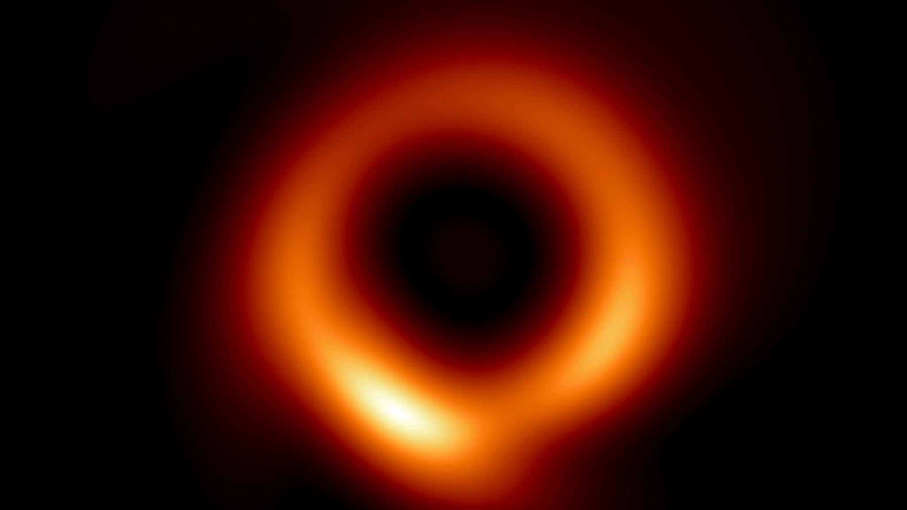
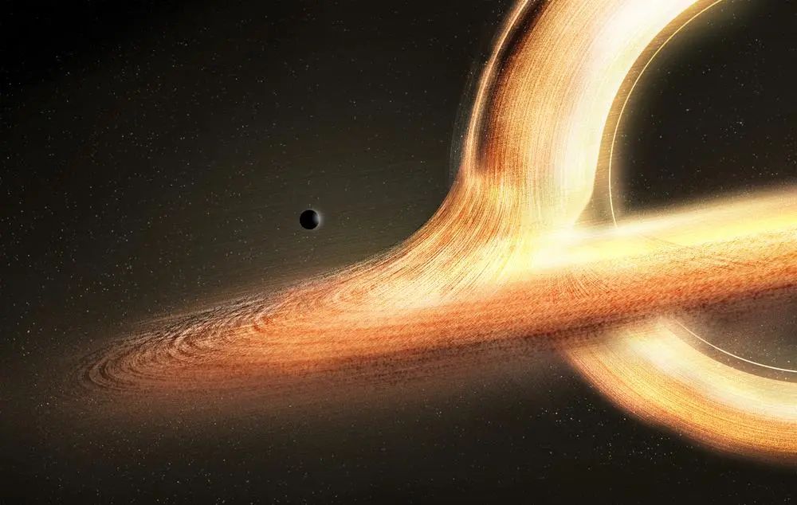
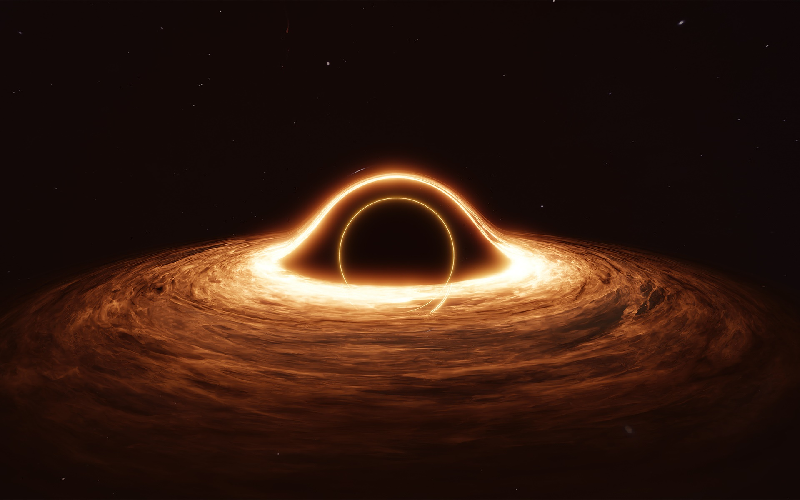

Os buracos negros são estruturas cósmicas intrigantes e extremamente densas, cuja gravidade é tão intensa que nada, nem mesmo a luz, consegue escapar de sua atração. Eles são formados a partir do colapso de estrelas massivas, resultando em um ponto no espaço-tempo onde a gravidade se torna infinitamente forte. Esses enigmáticos buracos negros desafiam nossa compreensão convencional da física e têm fascinado cientistas e entusiastas do espaço por décadas.

A presença de um buraco negro distorce o espaço e o tempo ao seu redor de maneiras extraordinárias, um fenômeno descrito pela teoria da relatividade de Einstein. O tempo é afetado de tal forma que um observador próximo a um buraco negro experienciaria o tempo passando mais devagar do que um observador distante. Isso cria uma série de efeitos peculiares, como a dilatação do tempo, que foram confirmados através de observações astronômicas.

Os buracos negros desempenham um papel crucial na cosmologia, influenciando a evolução das galáxias e contribuindo para a formação de estruturas cósmicas. Apesar dos avanços científicos, muitos mistérios permanecem, como a possível conexão entre buracos negros e a matéria escura, bem como a teoria da unificação da gravidade quântica, que busca reconciliar a relatividade de Einstein com as leis da física quântica. Os buracos negros continuam a intrigar e desafiar nossa compreensão fundamental do universo.
